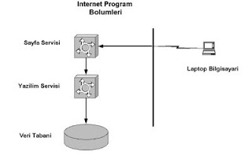

İnternet Sayfası İstenince Ne Olur
Sayfa istenince yapılan işlemler aşağıda sıralanmıştır.
Kullanıcı tarayıcı ile bir veb sayfası ister
Bu komut, sayfa servisi tarafından alınır. Eğer sayfa HTML değil, JSP/JHTML gibi yazılım servisi gerektiren bir sayfa ise, yazılım servisine aktarılır.
Yazılım servisi sayfa içindeki Java veya diğer kodu işletir, veri tabanına ulaşması gerekiyorsa ulaşır ve sonuçları HTML olarak sayfa servisine geri gönderir.
Sayfa servisi öteki HTML bilgilerini ekleyerek bütün sayfayı kullanıcıya yollar.
